Модульная структура

Единый центр управления полётами, откуда можно запустить любую функцию Atom.
Команда Install Packages — для установки расширений.
Поиск нужного пакета для Atom. Расширения написаны сообществом, содержатся в центральном репозитории и имеют открытый исходный код.
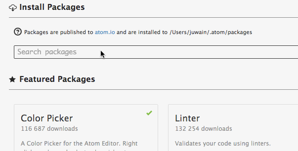Менеджер расширений для Atom прямо в консоли:
быстро, просто, понятно.

Пишем HTML сокращениями: никакого copy-paste, только хардкор.
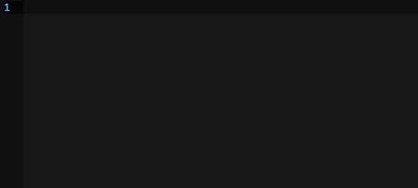Пишем CSS сокращениями: никакого copy-paste, только хардкор.
Расставляем вендорные префиксы CSS автоматически для нужного набора браузеров.
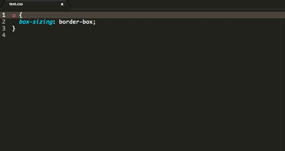Также можно использовать Autoprefixer в стилевом разделе HTML-файла.
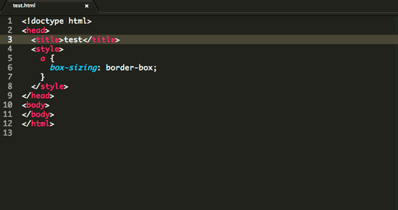Красиво форматируем беспорядочный код на разных языках: от HTML/CSS до С++ и SQL.
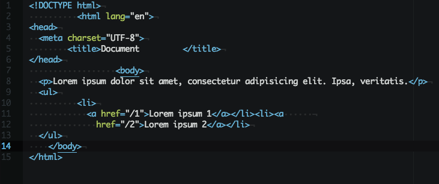Пишем JS сокращениями: много разных полезных сниппетов из коробки. Есть возможность создать свои варианты.
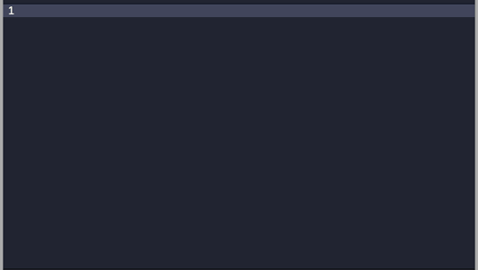Пишем CSS-код без ошибок. Полезно для новичков.
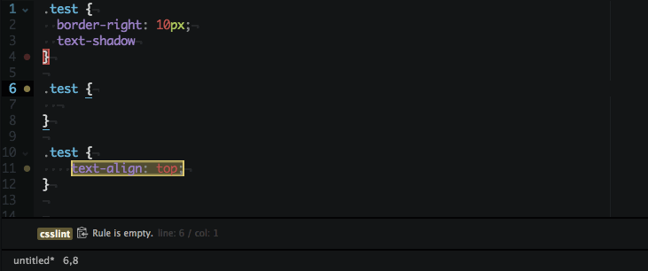Выбираем цвет из визуальной палитры прямо в редакторе.
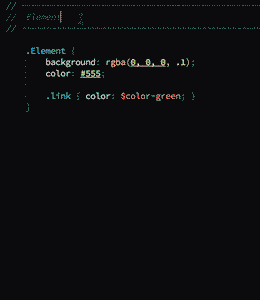Экономим время на рутинном наборе одних и тех же слов с умным окошком автодополнения.
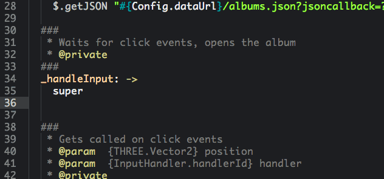Обозреваем весь код файла в графической панели. Быстро прокручиваем в нужное место. Настраиваем на свой вкус.
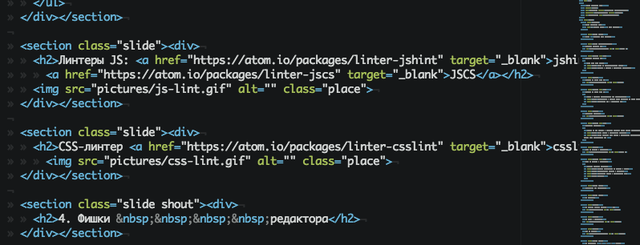При редактировании файлов .md сразу видим результат.
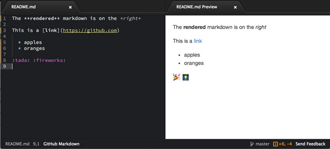Решаем конфликты Git прямо в редакторе: быстро и безболезненно.
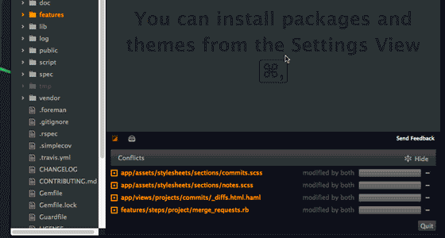Переключаемся из редактора в текущую директорию в консоли одним сочетанием клавиш.
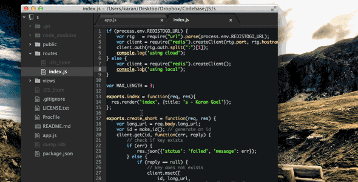